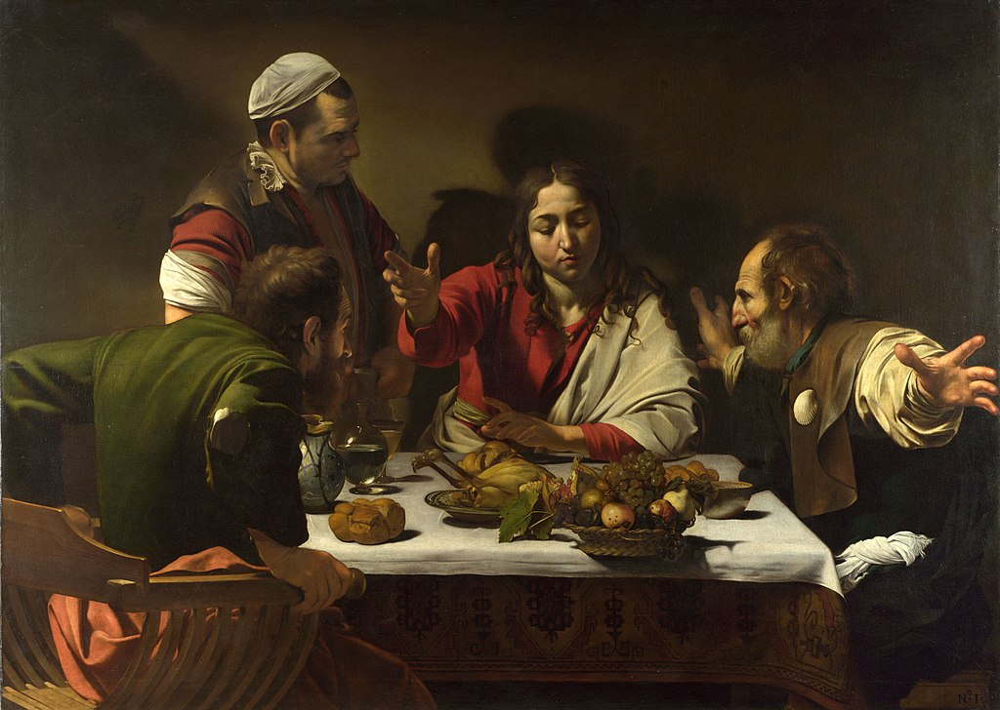

<head>
<meta charset="UTF-8" />
<meta name="keywords" content="drawing, painting" />
<meta name="description" content="drawings by Sunjy" />
<title>Sunjy</title>
<link rel="shortcut icon" type="image/x-icon" href="../../mImages/mCommon/favicon.ico" media="screen" />
<link rel="stylesheet" type="text/css" href="../../mCsses/mCommon/mCssA.css" />
<link rel="stylesheet" type="text/css" href="../../mCsses/mCommon/mCssB.css" />
<link rel="stylesheet" type="text/css" href="../../mCsses/mCommon/mCssC.css" />
<link rel="stylesheet" type="text/css" href="../../mCsses/mCommon/mCssD.css" />
<link rel="stylesheet" type="text/css" href="../../mCsses/mContent/mCssA.css" />
<link rel="stylesheet" type="text/css" href="../../mCsses/mContent/mCssB.css" />
<link rel="stylesheet" type="text/css" href="../../mCsses/mContent/mCssC.css" />
<link rel="stylesheet" type="text/css" href="../../mCsses/mContent/mCssD.css" />
</head>
<script type="text/javascript" src="../../mScripts/mContent/mContentAA.js" /></script>
<script type="text/javascript" src="../../mScripts/mContent/mContentAB.js" /></script>
<script type="text/javascript" src="../../mScripts/mContent/mContentAC.js" /></script>
<script type="text/javascript" src="../../mScripts/mContent/mContentAD.js" /></script>
<script type="text/javascript"></script> 
<script type="text/javascript">
document.write('<div class="mImgAbsolute"></div>');
/*
document.write('<p class="mFontSizeBColor" />From a white paper...</p>');
document.write('<table class="center"><tr><td>');
document.write('');
document.write('</td></tr></table>');
*/
</script>


<script type="text/javascript">
document.write('<p class="mFontSizeBColor" />Supper at Emmaus</p>');
document.write('<p class="mFontSizeSColor" />“Supper at Emmaus” by Caravaggio depicts the moment when the resurrected Jesus reveals himself to two of his surprised disciples, only to soon vanish from their sight, as told in the Gospel of Luke 24: 30–31. One of the disciples, Cleopas, wears the scallop shell of a pilgrim on his clothing. The other apostle, presumed to be Luke, wears the green torn coat. The standing waiter appears oblivious to the unexpected event that is taking place.<br><br>This event, according to the Gospel, took place in the town of Emmaus. Luke reports that Jesus appeared, after his death and resurrection, before two of his disciples while they were walking on the road to Emmaus. Its geographical identification is not clear, several locations having been suggested throughout history, all we know about the town is that it is on the road connecting it with Jerusalem.<br><br>According to the Gospel, Jesus appeared to them “in another form,” which may explain why Caravaggio depicted a beardless Jesus in this painting. In depicting Jesus interrupting an ordinary meal, is Caravaggio suggesting that perhaps Jesus, could be an unseen part of our daily activities or encounters? This painting depicts life-sized figures with a dark and blank background, and the table layout is a still-life meal with the basket of fruit dangling over the edge. Does the basket teeter on the edge of the table symbolize that an assumed life could be interrupted at any time?<br></p>');
document.write('<table class="center" /><tr><td>');
document.write('<br>This event, according to the Gospel, took place in the town of Emmaus. Luke reports that Jesus appeared, after his death and resurrection, before two of his disciples while they were walking on the road to Emmaus. Its geographical identification is not clear, several locations having been suggested throughout history, all we know about the town is that it is on the road connecting it with Jerusalem.<br><br>According to the Gospel, Jesus appeared to them “in another form,” which may explain why Caravaggio depicted a beardless Jesus in this painting. In depicting Jesus interrupting an ordinary meal, is Caravaggio suggesting that perhaps Jesus, could be an unseen part of our daily activities or encounters? This painting depicts life-sized figures with a dark and blank background, and the table layout is a still-life meal with the basket of fruit dangling over the edge. Does the basket teeter on the edge of the table symbolize that an assumed life could be interrupted at any time?<br>" />');
document.write('</td></tr></table>');
</script>


